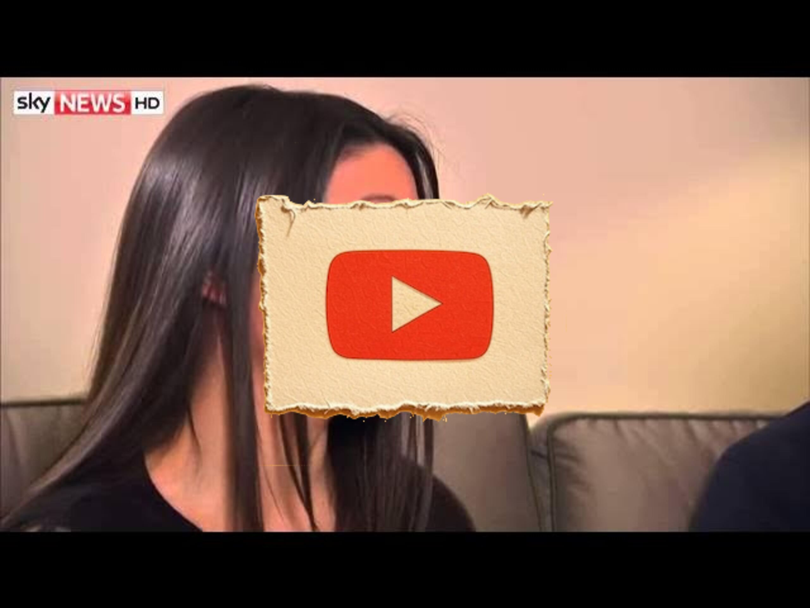

Great Pods
Amanda Knox: Meredith Kercher's family asked if they believe guilty verdict
Key Points
The verdict was expected by the family, though they knew there would be a council appeal regardless of the decision
Language barriers made it difficult to immediately understand the courtroom proceedings in Italian
Amanda Knox has stated she won't return to Italy and would have to be dragged back
The case has multiple levels of appeals, making the current verdict not final
If found guilty at the final level, extradition between Italy and America would need to be resolved
The case has been ongoing for nearly seven years without resolution
The family hasn't been able to properly grieve Meredith due to the prolonged legal process
Media attention has focused more on the defendants than on Meredith as the victim
The next verdict is expected in Spring 2015
Meredith has been largely forgotten in the case coverage, though supporters still remember her
Meredith was only 21 years old when she was killed
The family has tried to remain measured knowing this would be a lengthy process
The case is described as very intricate and complex with many question marks remaining
Amanda Knox has been convicted twice of murder and sentenced to 28.5 years
The family supports the prosecution and legal team's approach
The family finds it difficult to definitively judge guilt as they are not judges, jury, or detectives
America would likely cooperate with extradition given mutual agreements on criminal matters
Rafael Sollecito, being an Italian national, already had his passport taken and would be easier to detain
Full Transcript
Language: en Lyle Stephanie um let me ask you first of all what you made of the verdict last night um I think in deep down I thought it was going to go that way um obviously I had no way of really knowing that bearing in mind that was the initial decision which was then acquitted and obviously overturned um and I think I said to people at the time um going into this we were well aware that there would be a councel appeal no matter what last night's decision was um which is why you know I was perhaps a bit nonplused when the actual decision came out um and the other thing of course for us is although Stephanie has some Italian language background I don't um and in that courtroom it's obviously all very tense it's read out very quickly um and it actually takes a few seconds for for us or me personally to even get a translation of what a decision is so and Stephanie what do you make of Amanda noox saying already there's no way I'm coming back to Italy they'll have to drag me off kicking and streaming um I think we're in a difficult position at the moment because there are so many steps in this system that it's not been confirmed it's not the end um and as L said it could have gone either way yesterday and I was quite prepared for that um especially seeing as it will go to another level however without knowing what the final answer is going to be it's difficult to know how anyone's going to feel or react um and really when it comes down to it if they are found guilty at the very end of the case and she doesn't come back here then that's going to be for Italy and America to to kind of decide what they're going to do do with that because as La said um previously if they're convicted and they are guilty of murder they need to be somewhere not just free in America or Italy um so must be difficult for you though this has been going on the best part of seven years now and still it's not over yeah absolutely um yeah I've said before that you know the way that Meredith was killed is obviously horrific um we've not really had a chance to properly grief her because of this whole process been going on so long there's obviously been so much attention on the defendants and the case itself um rather than Meredith as the victim um and yeah absolutely you know the fact that it's in a foreign country a lot of it's obviously in a foreign language we're having to read interpretations of stuff secondhand and on top of that the fact that it's been been as you say sort of knocking on into seven years now and the next verdict in this is going to be spring 2015 makes it very difficult for us to sort of you know finally draw a line of things and move on meanwhile of course Meredith ker your sister is almost forgotten as you say in all of this it's all become about Amanda Knox particularly if she gets to see this what would you say to her I don't know that we have anything specific to say to anyone that's in question at the moment um but in general with regards to you saying about Meredith being forgotten I think she has been forgotten very much so in this case because it does very much focus on the trial rather than the victim at the moment um however there are a lot of people out there who still send messages um still donate to the fund still talk about her we're very much in touch with Meredith's friends um and as a family we all remember her together so she's definitely not forgotten but I think that the focus has been shifted in the case and in the media from actually as La said how horrific this crime is what's actually happened to MZ the fact she was only 21 um and it could happen to someone else just as easily and I think that's almost the most important part to remember that actually we need to find out what happened you seem very measured about this this was your sister we have a woman who's been convicted twice now of her murder sitting on the west coast of America saying I'm not coming back I'm not going to serve another day of this 28 and a half year sentence how does that make you feel well sorry I was going to say um I I think part of the reason we've we've tried to remain measured about it as you say is because I think we were made quite early on that this could be a very lengthy process um I think as everyone who's been following the case and any of the details of it is aware it's a very intricate complex um uh case and scenario of what perhaps happened that night there's certainly a lot of um a lot lot of question marks I suppose at the moment still over what precisely happened and from our point view you know we' very much supported the as I said before the prosecution and the legal team the sance they've taken on it um and the decision that they've made so from our point of view while we fully supported on them that um we're well aware that it it could have taken some time decisions could have gone either way um you know and it's it's difficult to sort of um 100% expect one thing to happen or the other um um and I think you you you kind of have to sort of sit almost um across the middle of those two until there is a final conclusion on it really okay I ask you both a final question do you think Amanda Knox and Rafael solicito killed your sister and do you think either of them will ever end up back in jail I think that's a very difficult question for us to answer at the moment because as L said there are still so many things being investigated needing to be confirmed that we aren't judges we're not jury and we're certainly not detectives so it's difficult for us to know what's fact what's fiction other than what we are told um and that is all that we can go by um it obviously suggests that that is the truth and that they are guilty seeing as it's been upheld again this time but equally it was overturned last time so we may never know exactly what's happened but given the fact that the Italian legal system is so thorough and there is another stage um we would hope that they will be able to find find out even if not exactly what happened that night just to be 100% sure who is guilty and do you think they ever good J uh it's hard to say um you know obviously a lots being said at the moment of of expedition you know if if last night's decisions upheld in Spring 2015 um as I said before um I'd be surprised if if America didn't cooperate with an extradition um you know if they have a mutual agreement on this and America seek to extradite criminals from other countries themselves um I'd find it strange if they didn't cooperate in that that sense and obviously Sol to himself being a an Italian national already in the country and and already had his passport um taken from him um I don't I don't see how you could have somebody convicted of of what as I said is such a horrific crime we're not just talking of you know a drunk driver here killing somebody um I can't see how somebody couldn't go to prison for
← All Summaries
Watch on YouTube